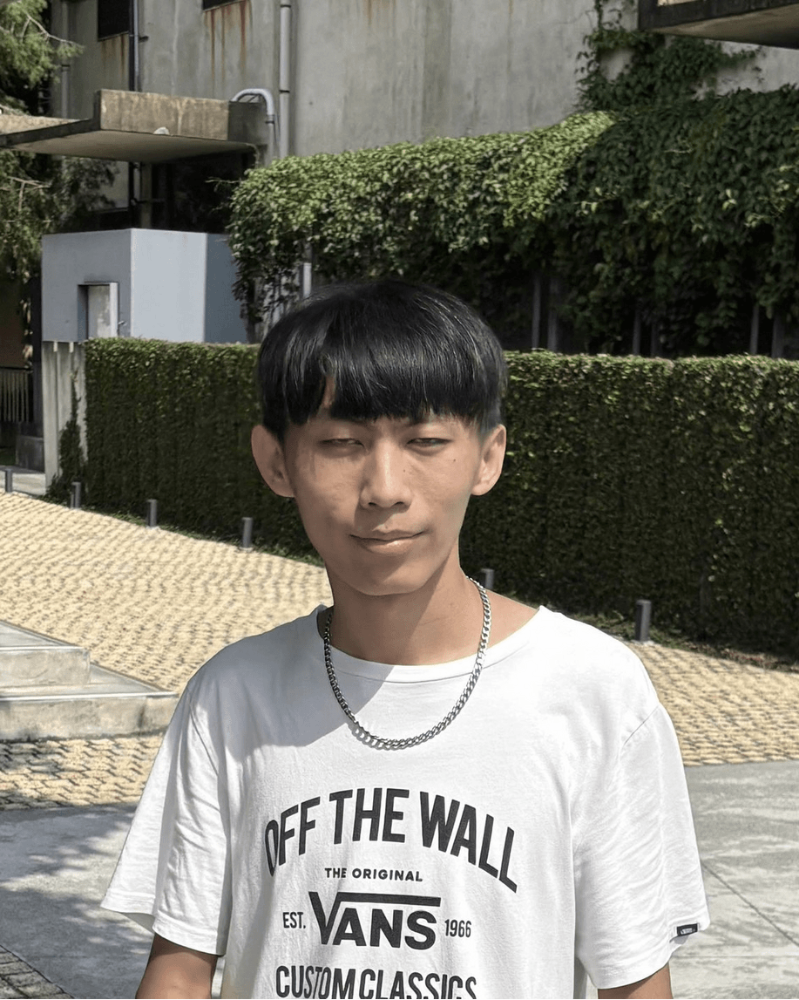

s1114572
陳群翔 (Chun-Hsiang Chen)

嘉義市新民路580號資管系 Phone: +886-5-2732892 Email: s1114572@mail.ncyu.edu.tw
姓名 來頭 生日
組員
- 2004-01-28
- 2004-07-25
- 2004-06-16
- 2004-07-22
- 2003-12-27
簡介
- 我是陳群翔，台南人，今年大三，就讀於嘉義大學資管系，個性內向，平時的興趣是打排球和籃球，目前是資管系男排的成員，會選擇加入系男排是因為在高中的班際比賽時，發覺自己熱愛排球大過於籃球，也很享受扣球所帶來的快感，同時也可以讓大學生活更加充實。
- 會選擇留在嘉大，主要是因為班級氣氛很融洽，平時都會一起吃飯、玩樂，在課業上有遇到困難時，同學也都很樂於協助我。再來還有一個原因是嘉義跟我家(台南)的距離很近，當假日回家時，交通所花費的時間較短、費用較便宜，就不會像一些讀東部、北部學校的人，可能一至兩個月才能回家一次。
- 大四畢業後，我計畫先進入職場，所以我會先去服完兵役，然後尋求一份穩定的工作，由於沒有打算繼續就讀研究所的關係，對於薪水的要求不高，但如果能找到自己可以接受的職位與工作內容，可能就會以這份工作為主要收入；如果薪水不如預期的話，我就會選擇去多多考取證照，尋求更好的工作機會。